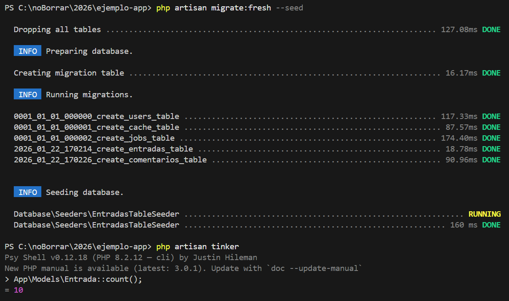

Modelos, Migraciones y Seeders
Aprende a estructurar la base de datos de tu aplicación Laravel de forma profesional, automatizando la creación de tablas y el poblado de datos iniciales.
Creación de Modelos y Migraciones
Utilice el parámetro -m para generar el archivo de migración junto al modelo de Eloquent.
php artisan make:model Comentario -m
Definición de Esquemas (Migrations)
Ahora vamos a definir las columnas de nuestras tablas en los archivos que se acaban de crear en:
database/migrations/.
Archivo: database/migrations/xxxx_xx_xx_xxxxxx_create_entradas_table.php
$table->id();
$table->string('titulo');
$table->text('contenido');
$table->timestamps();
});
Archivo: database/migrations/xxxx_xx_xx_xxxxxx_create_comentarios_table.php
$table->id();
$table->foreignId('entrada_id')->constrained();
$table->text('mensaje');
$table->timestamps();
});
Lógica de Modelos y Fillable
Configurar los modelos (Lógica y Seguridad).
Vamos a app/Models/ para habilitar la asignación masiva y las relaciones.
Modelo Eloquent para gestionar entradas y sus comentarios.
Modelo Entrada.php
ruta: App\Models\Entrada.php
// Define el espacio de nombres donde se ubica el modelo
use Illuminate\Database\Eloquent\Model;
// Importa la clase base Model de Eloquent
class Entrada extends Model
// Declara el modelo Entrada y hereda funcionalidades de Eloquent
{
// Define los campos que pueden asignarse de forma masiva
// Permite usar Entrada::create() en seeders y controladores
protected $fillable = ['titulo', 'contenido'];
// Relación uno a muchos: una entrada puede tener varios comentarios
// Laravel usa entrada_id como clave foránea por convención
public function comentarios()
{
return $this->hasMany( Comentario::class);
}
// Aquí se pueden agregar más métodos o relaciones
}
Modelo Comentario.php
ruta: App\Models\Comentario.php
use Illuminate\Database\Eloquent\Model;
// Importa la clase base Model de Eloquent
class Comentario extends Model
// Declara el modelo Comentario
{
// Campos que permiten asignación masiva (mass assignment)
// Incluye la clave foránea entrada_id y el contenido del comentario
protected $fillable = ['entrada_id', 'mensaje'];
// Relación inversa: un comentario pertenece a una entrada
// Laravel buscará la columna entrada_id como clave foránea
public function entrada()
{
return $this->belongsTo( Entrada::class);
}
// Aquí se pueden agregar más métodos o relaciones
}
La propiedad $fillable es obligatoria para permitir el poblado de datos mediante el método create().
protected $fillable = ['titulo', 'contenido'];
// Modelo Comentario.php
protected $fillable = ['entrada_id', 'mensaje'];
Automatización de Datos (Seeders) para poblar la base de datos
Primero, crea el archivo del seeder en la consola; digita:
database/seeders/EntradasTableSeeder.php y pega este código que inserta 10 entradas con 2 comentarios cada una:
Seeder para insertar entradas y comentarios de prueba relacionados entre sí.
namespace Database\Seeders;
// Define el espacio de nombres del seeder
use Illuminate\Database\Seeder;
use App\Models\Entrada;
use App\Models\Comentario;
// Importa los modelos que se utilizarán
class EntradasTableSeeder extends Seeder
{
// Método que se ejecuta al correr el seeder
public function run()
{
// Bucle para crear 10 entradas con comentarios
for ( $i = 1; $i <= 10; $i++) {
// Se crea una nueva entrada
$entrada = Entrada::create([
'titulo' => "Noticia número $i",
'contenido' => "Este es el cuerpo de la noticia $i creada para pruebas.",
]);
// Primer comentario asociado a la entrada
Comentario::create([
'entrada_id' => $entrada->id,
'mensaje' => "Interesante artículo sobre la noticia $i",
]);
// Segundo comentario asociado a la entrada
Comentario::create([
'entrada_id' => $entrada->id,
'mensaje' => "¡Gracias por compartir esta información!",
]);
}
}
}
Registrar y Ejecutar
Abre el archivo maestro database/seeders/DatabaseSeeder.php y llama a tu seeder:
// Método principal que ejecuta los seeders registrados
{
// Llama al seeder EntradasTableSeeder
$this->call([
EntradasTableSeeder::class,
]);
}
Seeder para insertar entradas y comentarios de prueba relacionados entre sí.
Comando de Ejecución Global
Limpia las tablas e inicia el proceso de poblado:
Verificación Final
Para estar 100% seguros de que los datos se insertaron correctamente, utiliza Tinker para verificar los registros en la base de datos.
// tinker es una consola para probar tus seeders
App\Models\Entrada::count(); // Debe devolver 10
App\Models\Comentario::count(); // Debe devolver 20
Si no es asi revisa nuevamente los pasos.
Muestra de resultado final
